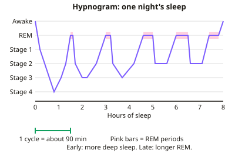

GCSE Psychology · Topic 7
Sleep and dreaming
Sleep and dreaming explores why we sleep, what happens in our brains at night, and why we dream.
We will study the stages of sleep and E E G evidence, circadian rhythms and the body clock.
Then we look at the functions of sleep, sleep deprivation, sleep disorders and their treatments, and theories of dreaming.
- 5 subtopics
- 246 questions
- Free: 7.1 notes and 10 questions
In this topic
- 7.1The stages of sleep, the sleep cycle and EEG evidenceFree below · 50 questions
- 7.2Circadian rhythms, the body clock and zeitgebers (Siffre and Aschoff and Wever)Open in Full Marks · 42 questions
- 7.3Functions of sleep, sleep across the lifespan and the effects of sleep deprivationOpen in Full Marks · 40 questions
- 7.4Sleep disorders: insomnia, sleepwalking, narcolepsy and sleep apnoea, and their treatmentsOpen in Full Marks · 63 questions
- 7.5Theories of dreaming: Freud's wish fulfilment and activation-synthesis, and research into dreamsOpen in Full Marks · 51 questions
7.1 · Free notes
The stages of sleep, the sleep cycle and EEG evidence

Key points
- Sleep is a naturally recurring altered state of consciousness. It is studied with an EEG (electroencephalogram): scalp electrodes record the brain's electrical activity as brain waves. An EOG (eye movements) and EMG (muscle tone) are often recorded as well.
- Brain waves are described by frequency (cycles per second, measured in hertz, Hz) and amplitude (height). Beta is 13-30 Hz (alert, awake). Alpha is 8-13 Hz (relaxed, eyes closed). Theta is 4-8 Hz. Delta is 0.5-4 Hz (slow, high amplitude).
- Stage 1 is light sleep. Alpha waves give way to slower, irregular theta waves. The sleeper is easily woken and may have a hypnic jerk. It lasts only a few minutes.
- Stage 2 is still light sleep. The EEG shows theta waves with bursts called sleep spindles and K-complexes. Heart rate and body temperature fall. It takes up about half of the night.
- Stages 3 and 4 are slow-wave sleep (SWS) or deep sleep, dominated by delta waves. Delta is about 20-50% of the trace in stage 3 and over 50% in stage 4. The sleeper is hardest to wake, growth hormone is released, and sleepwalking and night terrors occur here.
- REM (rapid eye movement) sleep has fast, desynchronised brain waves much like waking, so it is called paradoxical sleep. The eyes move rapidly, the body is temporarily paralysed (atonia) and vivid dreams are most common.
- The sleep cycle runs stage 1, 2, 3, 4, back up through 3 and 2, then REM. It lasts about 90 minutes and repeats 4-6 times a night (about 5 in 8 hours). Rhythms shorter than 24 hours like this are called ultradian.
- Across the night, SWS dominates the early cycles and stage 4 shrinks or disappears later. REM periods lengthen, from about 10 minutes in the first cycle to 30 minutes or more towards morning.
- Dement and Kleitman (1957) woke sleepers in the lab. About 80% of those woken in REM reported dreaming, far more than those woken in NREM sleep. This linked REM with dreaming. The sample was small.
- Evaluation of EEG: it gives objective, scientific data that does not rely on self-report. However, sleeping in a lab while wired up and in an unfamiliar bed is artificial (low ecological validity), samples are small, and an EEG cannot show what a dream is about.
- Exam tip: link each stage to its wave type and one key feature. Some textbooks merge stages 3 and 4 as 'N3', but OCR and Edexcel use stages 1-4 plus REM.
In more detail
- The cycle: one sleep cycle lasts about 90 minutes, and most adults go through four to six cycles a night.
- EEG patterns: beta waves when alert, alpha when relaxed, theta in stage 1, sleep spindles and K-complexes in stage 2, slow delta waves in deep sleep.
- REM sleep: the EEG looks almost like waking, the eyes dart about, and the body is temporarily paralysed.
- Dreams and REM: Dement and Kleitman (1957) found people woken during REM sleep reported dreams about 80% of the time.
- Through the night: deep sleep dominates the early cycles, while REM periods get longer towards morning.
Practice
The stages of sleep, the sleep cycle and EEG evidence: 10 questions
Pick an answer to check it, or open the answer for the explanation.
1. Which stage of sleep is classed as the deepest, with the person hardest to wake and delta waves in more than 50% of the trace?
- Stage 4
- Stage 1
- REM sleep
- Stage 2
Show answer
A: Stage 4. Stage 4 is the deepest slow-wave sleep: delta waves make up over half of the EEG and the sleeper is hardest to wake. REM has fast, waking-like waves.
2. Approximately how long is one complete sleep cycle in a typical adult?
- 30 minutes
- 90 minutes
- 60 minutes
- 4 hours
Show answer
B: 90 minutes. A cycle through stages 1-4 and REM lasts about 90 minutes, so an adult has roughly four to six cycles in a night.
3. Sleep spindles and K-complexes are bursts of activity seen on the EEG in which stage?
- REM sleep
- Stage 2
- Stage 4
- Stage 1
Show answer
B: Stage 2. Stage 2 shows theta waves interrupted by sleep spindles and K-complexes. Stage 1 has alpha changing to theta; stage 4 is mainly delta.
4. What does an EEG record?
- Electrical activity of the brain via scalp electrodes
- Heart rate through chest electrodes
- Blood flow in the brain using radioactive tracers
- Brain structure using X-rays
Show answer
A: Electrical activity of the brain via scalp electrodes. An EEG (electroencephalogram) uses electrodes on the scalp to record the brain's electrical activity as a trace of brain waves.
5. A sleeper's EEG shows fast, irregular waves, their eyes move rapidly under the lids and their muscles are almost completely limp. Which stage is this?
- Stage 2
- Stage 3
- REM sleep
- Stage 1
Show answer
C: REM sleep. Fast waves like waking, rapid eye movements and muscle paralysis (atonia) are the signs of REM sleep.
6. Dement and Kleitman (1957) woke participants during REM and non-REM sleep. What did they find?
- Dream recall was equal in REM and non-REM
- About 80% woken in REM reported dreaming, far more than in non-REM
- Dreaming happened only in stage 4
- Almost nobody woken in REM recalled a dream
Show answer
B: About 80% woken in REM reported dreaming, far more than in non-REM. Most people woken from REM (about 80%) reported vivid dreams, much more than from non-REM sleep, linking REM with dreaming.
7. How does a typical night's sleep change from the first cycle to the last?
- REM occurs only early; there is none later
- Deep sleep increases and REM periods get shorter
- More stage 4 early on, with REM periods getting longer later
- Stage 4 and REM stay the same length throughout
Show answer
C: More stage 4 early on, with REM periods getting longer later. Slow-wave sleep dominates the early cycles, while REM periods lengthen towards morning.
8. A volunteer sleeps for 8 hours (480 minutes) in a lab, with cycles of 90 minutes. About how many cycles will they complete?
- 8
- 4
- 3
- 5
Show answer
D: 5. 480 ÷ 90 = 5.3, so about five complete cycles. Four to six cycles per night is typical for adults.
9. A person drifting off shows an EEG changing from regular alpha waves to slower, irregular theta waves. Which stage have they entered?
- Stage 4
- REM sleep
- Stage 1
- Stage 3
Show answer
C: Stage 1. The shift from alpha to theta waves marks stage 1, the lightest stage of sleep, when the person is easily woken.
10. Why is REM sleep sometimes called 'paradoxical sleep'?
- It only happens when the person is awake
- It is the lightest stage but the hardest to wake from
- The brain is inactive but the muscles are very active
- The brain is as active as when awake but the body is paralysed
Show answer
D: The brain is as active as when awake but the body is paralysed. The brain shows fast, waking-like activity, yet the body is asleep and paralysed, which seems a paradox.
Keep going in Full Marks
Full Marks has 50 questions on The stages of sleep, the sleep cycle and EEG evidence (40 more than here), set out in practice levels. You also get notes and 3D models for all 5 subtopics of Sleep and dreaming, plus games, timed exams and past papers.
On your exam board
Not in the AQA specification.